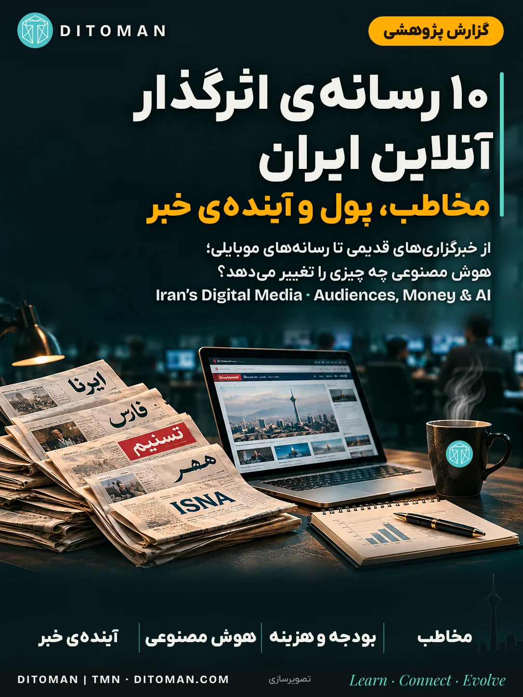
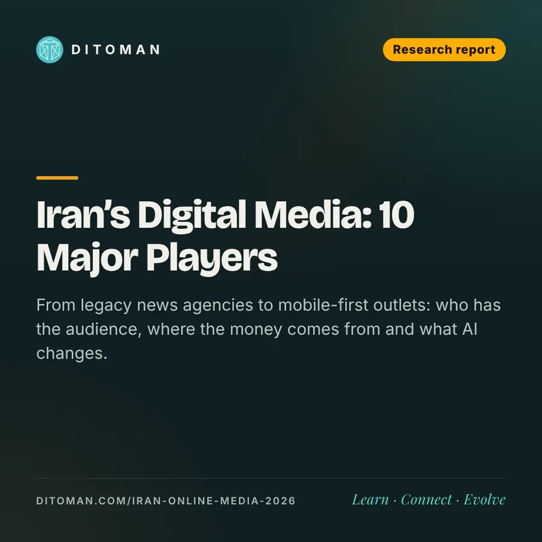

۱۰ رسانهی اثرگذار آنلاین ایران؛ مخاطب، پول و آیندهی خبر
Iran’s digital media: 10 major players, money, audiences and AI
از خبرگزاریهای قدیمی تا رسانههای موبایلی؛ چه کسانی مخاطب دارند، پول از کجا میآید و هوش مصنوعی چه چیزی را تغییر میدهد؟
From legacy news agencies to mobile-first outlets: who has the audience, where the money comes from and what AI changes.
1. ده رسانه در یک نگاه
یک رسانه در تلگرام دو و نیم میلیون عضو دارد، اما هیچکس بیرون از تحریریهاش نمیداند بودجهاش چقدر است. رسانهی دیگری نود سال سابقه و حدود نود دفتر دارد. و یک سایت ورزشی، بیسروصدا، سالهاست یکی از پربازدیدترین سایتهای فارسی است.
| رسانه | آغاز فعالیت | نوع و وابستگی | نقطهی قوت |
|---|---|---|---|
| ایرنا | ۱۳۱۳ (با نام آژانس پارس) | خبرگزاری رسمی دولت | حدود ۶۰ دفتر داخلی و ۳۰ دفتر خارجی؛ حدود ده زبان |
| ایسنا | ۱۳۷۸ | خبرگزاری دانشجویان؛ وابسته به جهاد دانشگاهی | شبکهی خبرنگاران دانشجو |
| فارس | ۱۳۸۱ | خبرگزاری؛ بنا بر منابع بینالمللی نزدیک به سپاه | تولید انبوه و سرعت |
| مهر | ۱۳۸۲ | خبرگزاری؛ وابسته به سازمان تبلیغات اسلامی | فرهنگ و نسخههای چندزبانه |
| تسنیم | ۱۳۹۱ | خبرگزاری؛ بنا بر منابع بینالمللی نزدیک به سپاه | کانال تلگرامی ۲٫۵ میلیونی |
| تابناک | ۱۳۸۵ تا ۱۳۸۶ | سایت خبری تحلیلی؛ غیردولتی | گزینش خبر و بخش نظرات |
| عصر ایران | ۱۳۸۵ | سایت خبری تحلیلی؛ غیردولتی | لحن ساده و یادداشتهای قابلاشتراک |
| خبرآنلاین | ۱۳۸۷ | سایت خبری تحلیلی؛ غیردولتی | گفتوگو و تحلیل امضادار |
| ورزش سه | حدود ۱۳۸۳ (نیازمند تأیید) | سایت تخصصی ورزش؛ خصوصی | نتایج زنده و ویدئو |
| آخرین خبر | حدود ۱۳۹۴ (نیازمند تأیید) | اپلیکیشن و کانال تجمیع خبر؛ خصوصی | مدل گوشیمحور |
رتبهبندی رسمی و مستقلی از بازدید رسانههای ایران وجود ندارد. این فهرست «ده نمونهی مهم» بر پایهی حضور در فهرستهای بازدید، مخاطب شبکههای اجتماعی و تنوع مدل است، نه جدول قطعی نفر اول تا دهم.
- نسل اول: خبرگزاریهای سازمانی که با بودجه و شبکهی خبرنگار کار میکنند
- نسل دوم: سایتهای خبری دههی ۱۳۸۰ که با تحریریهی کوچک و تیتر قوی رشد کردند
- نسل سوم: رسانههایی که با گوشی هوشمند آمدند؛ اپلیکیشن، کانال تلگرام و محتوای تخصصی
2. اینترنت قطع شد، اما رسانهی داخلی خاموش نشد
اینترنت بینالملل از ۱۸ دی ۱۴۰۴ تا ۵ خرداد ۱۴۰۵، با یک وقفهی کوتاه، قطع یا بهشدت محدود بود. دورهی ۸۸ روزهی پس از آغاز جنگ، طولانیترین قطع سراسری ثبتشده نام گرفت (GV Wire).
اما شبکهی داخلی ایران کار میکرد. ایران سالهاست شبکهی ملی اطلاعات ساخته که سرورها، مراکز داده و مسیرهای ارتباطیاش داخل کشور است. به همین دلیل خبرگزاریها و سایتهای خبری داخلی، پیامرسانهای بومی، بانکداری و بخش بزرگی از خدمات روزمره در دسترس ماندند.
این دقیقاً مزیت داشتن زیرساخت مستقل، بومی و محلی است: وقتی اتصال به جهان قطع میشود، کشور از درون خاموش نمیشود.
- تداوم انتشار: رسانهای که سرور و توزیعش داخل ایران بود، هر روز خبر منتشر کرد
- مخاطب بیشتر: در آن ماهها رسانههای داخلی عملاً تنها منبع خبر آنلاین در دسترس مردم بودند
- استقلال از سکوهای خارجی: رسانههایی که از قبل در پیامرسانهای بومی حضور داشتند، مخاطبشان را نگه داشتند
این مزیت هزینه هم داشت.
| اثر | عدد یا واقعیت |
|---|---|
| هزینهی روزانه برای اقتصاد | ۳۵٫۷ میلیون دلار به گفتهی وزیر ارتباطات؛ تا ۸۰ میلیون دلار با هزینههای غیرمستقیم |
| فروش آنلاین | افت ۸۰ درصدی |
| درآمد ناشران تبلیغات آنلاین | طبق گزارش زومیت، ۱۸ روز قطعی درآمد ۶۰ درصد ناشران را کم کرد |
| کار خبرنگاران | قطع دسترسی به پایگاههای داده و منابع خارجی |
رسانههای خصوصی که به تبلیغات، جستوجوی گوگل و شبکههای اجتماعی جهانی وابستهاند، درآمد و بخشی از مخاطبشان را از دست دادند. بنا بر گزارشها، در روزهای نخست قطعی دیماه خودِ شبکهی داخلی هم مدت کوتاهی مختل شد (Wikipedia).
- تحریم: نبود دسترسی به شبکههای تبلیغاتی جهانی، دشواری پرداخت ارزی برای سرور و نرمافزار و محدودیت ابزارهای حرفهای. رسانهی ایرانی از مخاطب خارج از کشورش تقریباً درآمدی ندارد
درس این تجربه: زیرساخت بومی تابآوری میسازد، اما جای اتصال به جهان را نمیگیرد. رسانهی قوی به هر دو نیاز دارد.
3. پول از کجا میآید و کجا خرج میشود؟
هیچکدام از این ده رسانه صورت مالی حسابرسیشدهی عمومی منتشر نمیکند. هر عددی که میبینید یا برآورد است یا مربوط به نهاد مادر (State Media Monitor).
| رسانه | منبع اصلی پول | چه عددی در دسترس است؟ |
|---|---|---|
| ایرنا | بودجهی دولت؛ کمی آگهی و فروش محتوا | برآورد کارشناسی: حدود ۸۰ درصد از بودجهی دولتی |
| ایسنا | یارانهی دولتی، آگهی و حمایت جهاد دانشگاهی | عدد رسمی منتشر نشده |
| فارس | حمایت نهادی | برآورد کارشناسی: حدود ۹ میلیون دلار در ۲۰۲۳ |
| مهر | سازمان تبلیغات اسلامی | فقط بودجهی نهاد مادر در لایحهی ۱۴۰۵: ۷٬۸۷۶ میلیارد تومان |
| تسنیم | حمایت نهادی | عدد رسمی منتشر نشده |
| سایتهای خبری خصوصی | تبلیغات نمایشی، رپرتاژ آگهی و حامیان | عدد رسمی منتشر نشده |
| ورزش سه و آخرین خبر | تبلیغات نمایشی، ویدئویی و درونبرنامهای | عدد رسمی منتشر نشده |
- مقیاس: بودجهی صداوسیما در لایحهی ۱۴۰۵ بین ۳۳ تا ۳۵٫۵ همت گزارش شده است. کل بازار تبلیغات آنلاین ایران را گزارشهای صنعت حدود ۳۲ همت برآورد کردهاند
- هزینهها: بزرگترین هزینه حقوق تحریریه است؛ بعد سرور، ویدئو و دفاتر. به نوشتهی CPJ، روزنامهی شرق در بهار ۱۴۰۵ از تعدیل بیش از ۱۰۰ نفر در یکی از بزرگترین رسانههای خصوصی خبر داد
4. مخاطب: چند نفر و کجا؟
مخاطب در شش جا پخش شده: سایت، اپلیکیشن، تلگرام، اینستاگرام، پیامرسانهای داخلی و بازنشر در کانالهای دیگر. جمع زدن این عددها خطاست.
| شاخص | عدد | منبع و تاریخ |
|---|---|---|
| کانال تلگرام تسنیم | ۲٬۴۸۴٬۷۸۷ عضو | صفحهی کانال، ۳۰ آبان ۱۴۰۵ |
| کانال تلگرام فارس | ۱٬۷۵۲٬۵۴۴ عضو | صفحهی کانال، ۳۰ آبان ۱۴۰۵ |
| اپلیکیشن آخرین خبر | ۴ میلیون نصب در کافهبازار | گزارش زومیت |
| مخاطب قابلسنجش ایسنا | ۹۱ درصد مرد؛ بیشتر ۲۵ تا ۳۴ ساله | Similarweb، اکتبر ۲۰۲۶ |
ابزارهای جهانی بازدید داخل ایران را خوب نمیبینند، و «عضو کانال» به معنی «خوانندهی هر پست» نیست.
5. چه مطالبی بیشتر خوانده میشود؟
آمار مستقل «پربازدیدترین مطلب» منتشر نمیشود؛ این بخش تحلیل دیتومان از الگوی محتواست.
- خبر کاربردی برنده است: دلار و طلا، یارانه، حقوق، مسکن، خودرو و وضعیت اینترنت
- لحظههای بحرانی: جنگ، زلزله، انتخابات و مذاکرات بازدید را چند برابر میکند
- ورزش: نتیجهی زنده، نقلوانتقالات و حاشیههای فوتبال
- قالب تیتر: تیترهای پرسشی، عددی و نقلقول مستقیم
6. هر رسانه در کدام سالها اثرگذارتر بود؟
این جدول تحلیل دیتومان است، نه دادهی اندازهگیریشده.
| دوره | چه شد؟ | رسانههای پیشتاز |
|---|---|---|
| تا پایان دههی ۱۳۷۰ | انحصار خبر رسمی | ایرنا |
| ۱۳۷۸ تا ۱۳۸۴ | رشد مطبوعات و اینترنت | ایسنا، سپس فارس و مهر |
| ۱۳۸۵ تا ۱۳۹۲ | عصر سایتهای خبری و بخش نظرات | تابناک، عصر ایران، خبرآنلاین |
| ۱۳۹۴ تا ۱۳۹۷ | انفجار تلگرام و خبر روی گوشی | آخرین خبر و کانالهای خبرگزاریها |
| جامهای جهانی اخیر | اوج بازدید ورزشی | ورزش سه |
| ۱۴۰۴ و ۱۴۰۵ | جنگ و قطع اینترنت | رسانههای در دسترس روی شبکهی داخلی |
7. هوش مصنوعی با این صنعت چه میکند؟
- جهان: طبق گزارش ۲۰۲۶ مؤسسهی رویترز، ۱۰ درصد مردم هر هفته از چتباتها خبر میگیرند (پارسال ۷ درصد). ورودی جستوجوی گوگل به بیش از ۲٬۵۰۰ سایت خبری در یک سال ۳۳ درصد کم شده است
- ایران: سرویسهای اصلی هوش مصنوعی بهدلیل تحریم رسماً در ایران ارائه نمیشوند؛ در مقابل، ابزارهای فارسی داخلی در حال شکل گرفتناند
| مدل رسانه | فرصت | تهدید |
|---|---|---|
| خبرگزاری | ترجمهی سریع، رونویسی، برچسبزنی آرشیو | خبر خام و تکراری را ماشین هم مینویسد |
| سایت خبری تحلیلی | خلاصهسازی سریعتر | مدل «بازنشر با تیتر تازه» آسیبپذیرترین است |
| سایت ورزشی | گزارش خودکار نتایج | پاسخ مستقیم موتورهای هوشمند |
| اپلیکیشن تجمیع خبر | شخصیسازی | چتباتها خودشان تجمیعکننده شدهاند |
آنچه ماشین جایگزین نمیکند: گزارش میدانی، دادهی اختصاصی و اعتماد. طبق همان گزارش، فقط ۲۰ درصد مردم به پاسخ چتباتها اعتماد دارند.
8. بیرون از ایران چقدر خوانده میشوند؟
- ظرفیت: ایرنا به حدود ده زبان و با حدود ۳۰ دفتر خارجی کار میکند (State Media Monitor). تسنیم، فارس و مهر هم نسخههای غیرفارسی دارند
- ترکیب کشورها: در بخشی از بازدید ایسنا که Similarweb میبیند، آمریکا ۳۲٫۷ درصد، سوئد ۱۱ درصد، هلند ۷٫۹ درصد و آلمان ۷٫۶ درصد سهم دارند؛ شبیه نقشهی مهاجرت ایرانیان
- اثر غیرمستقیم: رسانههای جهان خبر رسمی ایران را بیشتر به نقل از خبرگزاریها منتشر میکنند
- سایتهای خصوصی: تقریباً فقط فارسیاند و مخاطب خارجیشان ایرانیان مهاجرند
9. کارنامهی مقایسهای
ارزیابی کیفی دیتومان، نه آمار اندازهگیریشده.
| رسانه | ثبات مالی | چابکی دیجیتال | آسیب از قطع اینترنت | آسیب از هوش مصنوعی |
|---|---|---|---|---|
| ایرنا | زیاد | متوسط | کم | متوسط |
| ایسنا | متوسط | متوسط | کم | متوسط |
| فارس | زیاد | زیاد | کم | متوسط |
| مهر | زیاد | متوسط | کم | متوسط |
| تسنیم | زیاد | زیاد | کم | متوسط |
| تابناک | متوسط | متوسط | متوسط | زیاد |
| عصر ایران | کم | متوسط | متوسط | زیاد |
| خبرآنلاین | متوسط | متوسط | متوسط | متوسط |
| ورزش سه | متوسط | زیاد | زیاد | زیاد |
| آخرین خبر | کم | زیاد | زیاد | زیاد |
10. نگاه دیتومان
- پول پایدار، مخاطب پایدار نمیسازد. آینده را اعتماد مخاطب تعیین میکند، نه بودجه
- مدل «بازنشر» در خطر است. رسانهای که ارزشش فقط تیتر تازه روی خبر دیگران باشد، اولین قربانی هوش مصنوعی است
- شفافیت مزیت رقابتی آینده است. در بازاری که کمتر کسی عدد میدهد، گفتن منبع و محدودیت داده تمایز میسازد
آنچه تأیید نشد: بودجهی سالانهی هر رسانه، بازدید واقعی داخل ایران، پربازدیدترین مطالب و درصد دقیق مخاطب خارجی. عددهای منسوب به زومیت، یکتانت و خبرهای بودجه از عنوان و خلاصهی آن گزارشها گرفته شده است.
بیشتر بخوانید
منابع
- State Media Monitor: Iran
- State Media Monitor: Fars News Agency
- State Media Monitor: ISNA
- State Media Monitor: IRNA
- Wikipedia: List of Iranian news agencies
- Wikipedia: 2026 Internet blackout in Iran
- CPJ: Inside Iran’s mounting media crackdown (August 2026)
- GV Wire: After 88 days, Iranians are coming back online
- Reuters Institute: Digital News Report 2026
- Similarweb: isna.ir
- Iran International: IRIB budget in the 1405 bill
- Zoomit: internet shutdown and online publishers
- Digiato: Yektanet annual report 1404
- Zoomit: Akharin Khabar installs on Cafe Bazaar
آخرین بازبینی: ۳۰ آبان ۱۴۰۵. بودجه و بازدید دقیق بیشتر رسانهها منتشر نشده است؛ برآوردها با صورت مالی رسمی یکی نیستند. این گزارش پژوهشی و آموزشی است.